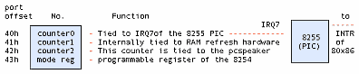
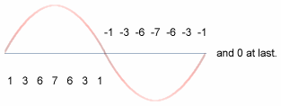

Sometimes I wonder how easy it is to re-invent the wheel, and then to prattle about how hard it was to get the thing moving. But then again this article is for those die-hards that sympathise with me, for those folk that reckon that the joy of doing something by oneself is more important than being the pioneer, the first soul on earth to step on the moon......
I decided to make the PC speaker spew rock music. (The speaker is that invisible little thing under the PC hood that beeps under your skin when you get naughty.) I wanted it to play real music. I couldn't bother to write all the code from scratch, to decode mp3, etc etc. So I got a little lazy and decided to play games with the most documented, most sophisticated Operating System Kernel, ever - Linux. ;)
How do you go about it, when you are new to a city and want to get from point 'a' to 'b' with confidence? I'd take a deep breath and start walking downtown. I'd start gleaning information and discovering places. Foolhardy? Just try it in the city of the Linux kernel. It's a maze of code, a dizzy labyrinth of cross-linked directories and makefiles. When I started off, I knew that this was going to be a long project. But I had the 'staff' of DOS and the 'rod' of Peter Norton's guide to the IBM PC and Compatibles with me to lend me courage. So off I strode with my chin in the air, and ready to take on the worst d(a)emons.
The PC-speaker driver patches that are available for download from, ftp://ftp.uk.linux.org/pub/people/dwmw2/pcsp/ (Authored by Michael Beck, maintained by David Woodhouse see http://linux-patches.rock-projects.com/v2.2-d/pcsp.html ) I understand, require to have the kernel recompiled if they are to work. When I started off, I was ready to play foul, and get quick results. Besides it's all a game, is it not ? ;-) That's why you'll find inline assembly in the code.Anyways, here is how it works..........
The internal speaker is tied to the buffered output of the 8254 timer chip on all PCs. The output of the 8254 timer is further latched through the integrated system peripheral chip, through port 61h. A little chart should help, I think. Here goes:

The base clock frequency of the 8254 is 1193180Hz which is 1/4 the standard NTSC frequency, incidentally. The counters have the values of the divisors, which, roughly speaking, are used to divide the base frequency. Thus the output of channel 0 will be at a frequency of 1193180Hz if counter0=1, 596590Hz if counter0=2 and so on. Therefore counter0=0 => a frequency of approximately 18.2 Hz, which is precisely the frequency at which the PIC is made to interrupt the processor. In DOS, the PIC is programmed to call the Interrupt Service Routine (ISR), at vector 8.
Effectively this means that the value of counter0 will determine the frequency of the timer ISR (Vector 8 in DOS) is called. Changing counter 0 changes the rate at which the timer ISR is called. Therefore if the same person wrote both the code for the ISR, and that for programming counter 0 of the 8254 timer chip, then he could get his ISR called at a predetermined rate as required.
All this is leading to another aside.
When you hear sound, you know something near you is vibrating. If that something is a speaker cone, you know immediately that there is an electrical signal driving it. So we could always grab the signal generator by the scruff, if we want to snuff out the noise. If we want audio, we need a vibrating, or alternating, voltage. And we know that digital implies numbers, 1s and 0s. How do we put all of this stuff together and create digital audio?
Lets imagine that we want a continuous hum to wake us out of slumber in the morning. Bless the man who tries to sell this gadget to me! We need a continuous sine wave. Something like:

The numbers represent how loud the noise gets at every instant. You're involuntarily doing DSP here. DSP is a year two pain-in-the-neck paper for most Electrical Engineering undergraduates. (I'm one of them. Accept my hearty condolences.) So I'd better mention that you're actually looking at samples. These values are all you need to recreate the wave we need. Do that continuously, and you have a continuous wave. So if we ran through the numbers starting at 1 through 7 through 0 through -1 through -7 through -1 to 0, all in a second, we'd get a very approximate sine wave at 1Hz. (Remember, Hertz is cycles per second.) Got the mechanics of the thing? Want a sine wave with a smoother curve? Just increase the number of samples you take per second. Here we've done 14. How about if it were 44000? That's the rate a CD player spews the numbers out to its DAC. DAC stands for Digital to Analog Converter, it's the little gadget that converts the 1s and 0s that make up the binary numbers that we are talking about into real analog time-varying voltage. Our little coding technique is called pulse code modulation. There are different ways to code the pulses, so we have PCM, ADPCM etc. The waveform above could be termed "4bit, signed mono PCM at 14Hz" sampling rate.
So you ask me, where does all this come in when we're talking about the PC speaker? How about a custom timer ISR to vibrate the speaker cone at a pre-requisite frequency, so that all the ISR programmer has to do is to make the PC speaker cone move to the required amplitude (distance from the zero line) according to the sample value he gets from digital data, from a CDROM, for example. This means that we can set up a timer ISR for 44000Hz, and that is CD quality music staring at us! Perfect logic if you have a DAC to convert every sample into the corresponding analog voltage. In fact, the parallel port DAC driver does just that. Just rig a R - 2R ladder network of resistors and tie a capacitor across the output, feed it to any amplifier, even a microphone input will do, and voila, you have digital music!
Alas, things are not all that simple with the PC speaker. All because the PC speaker is not at all tied to a DAC, but of all things, to a timer chip. Take look at the waveform output of a timer chip for, say, a sine wave:

We have two discrete values to play around with: One +5V, the other 0V and nothing in between. How do we get the Analog waveform? Oh man, why hast thou asked the impossible? Ask the designers at IBM who designed the first XT motherboards!
But we do have a very fragile, subtle solution. The techie terms are 1bit DAC, Chopping, and so on and so forth.
It's rather simple and easy to implement, and somewhere down the line, it was bound to happen. I doubt that the old XT bugger at IBM ever dreamt of 1.5 GHz Pentiums when he fixed his 8086 on the motherboard for the first time.
The idea is to drive the PC speaker cone in bursts, when we can't quite push it up to the mark smoothly. Mind you, at 22Khz the cone is a mighty lazy bloke, it reluctantly moves up to the mark. Halfway through, take a rest so that if it's overdone and the cone has overshot, it gets time to come back down. Something like anti-lock brakes in automobiles. When you press the brake pedal half way down, the mechanism starts alternately pushing the brakes on and off. When you're standing on the pedal, the brake shoes are not quite stuck to the wheel drum, they're hammering at a furious pace. So you don't get a locked wheel. Similarly the more frequently you hammer the speaker cone with a +5V pulse, the farther it moves from the centerline. Bingo! Vary the frequency of pulsing according to the required amplitude. I named the DOS version fm.com just to remind myself that the idea was indeed ingenuous.
Now go back to the first figure and look at counter 2 of the 8254. Where does it lead to ? To the PC speaker, of course. Now all we have to do to get REAL sound, is to dump a scaled (remember 1 < countervalue < 65535) that is proportional to sample value (value => amplitude in PCM). We do this from within our hack timer ISR. Go on and take a look at the myhandler() function in myaudio.h
The Linux kernel is an amazing piece of programming in that it has been organized so well that a person with little or no knowledge of assembly language can write a lot of kernel code (in fact 99% [wanna bet ? ;)] of the kernel is written in "c"). It is also designed in such a way that device driver writers are given a preset environment and an elegantly exhaustive programming interface to write code.
The kernel code is very portable, i.e., it can be compiled on a variety of machines (processors like the i86, alpha, sparc). I think it makes good logic to write code templates, which can be elaborated and tailor made for individual hardware. In English, I can best illustrate this principle with an example. Suppose that you want to publish a PhD thesis on how to wash clothes using your brand of washing machine. You'd write a sequence of steps starting from:
1) Insert the power cord into the wall socket and switch on the power
...
n) Finally, retrieve your garments from the soaking mess and dump them on the clothesline.
The sequence from 1 to n would take minor variations depending on whether your washing machine was semi or fully automatic, whether it was top or side loading (try step 'n' from the side loading washing machine, and send me an e-mail about it) and other variables. The instructions in your thesis would be fine for one washing machine, but how about if you were a freelance user manual writer, and needed to write manuals for a thousand brands?
Take the case of the /dev/dsp device interface, the default interface for PCM (pulse code modulated) and coded PCM sound. Hannu Savolainen designed much of the interface, with Alan Cox making significant contributions. But these designers--quite rightly--didn't make room for one teeny-weeny little device called the PC-speaker, in favor of the AWE 64 and cards of the kind. They assumed that all DSP devices would at least have DMA (Direct Memory Access is a technique by which "intelligent" peripheral chips take care of moving data to/from RAM, without involving the processor) support, or on board buffers, if not coprocessors (i.e., on-board processors). So they put the DMA registration code as a mandatory part of the OSS API. The OSS API has two levels of exported functions: those exported by soundcore.o and another set exported by sound.o
sound.o is stacked on top of soundcore.o and uses its exported functions much the same as any other device driver. It provides an easy interface to portable device drivers and supports advanced functions like DMA access. (Modern sound cards support at least DMA )
That's where we begin hacking. We have to avoid the standard OSS interface, and use the soundcore interface directly. Which means it's time for another technical discussion - character devices in Linux.
In Linux, there are mainly two kinds of devices: block and character. (We're ignoring network devices since they aren't really "devices", more like interfaces.)
Block devices are assumed to have certain characteristics like reading and writing in blocks, buffering, partitioning etc. The hard disk drive is the perfect example of a block device. An application normally accesses a hard drive through a file system driver. That's why in Unix you mount disk drives and do not access them sector-by-sector.
Character devices are meant to be read and written one byte at a time (e.g.: the serial port), but are transparently buffered to improve system throughput. An application accesses them by doing ordinary file operations on the corresponding device nodes. Device nodes are special "files" which can be accessed through the ordinary path tree. So if you want to write to the sound device, by convention, /dev/dsp is the published device node to use for that. Note that any device node that points to the corresponding device number registered by the driver can be used to access that driver. For example, the /dev/dsp node is attached to device number 14/3. (try: file /dev/dsp; on your system). You could equally well access it via /dev/mynode if /dev/mynode points to 14/3. Check the mknod man pages for exact semantics.
Now if you have a .wav file which is of a specific format, say 16-bit, stereo, raw pcm, to make it play on the system sound device, you might open the /dev/dsp node using the open system call, and open your .wav file, read a block of data from the .wav file, and write it to the /dev/dsp node using read and write system calls respectively. AHA! And guess what client is readily available for this? Our very own cp. So next time, try cp -f fart.wav /dev/dsp. And tell me how it sounded. I'll bet that unless you're very lucky, you wouldn't get the right sound even if you play Celine Dione. That's because the sound driver needs to be told what format the raw data it gets is in. More often than not, you'd be trying to play a 16-bit stereo file at 44khz on a 8-bit mono 8khz driver. That's like trying to play an LP disc at the wrong turntable speed.
The ioctl (short for input/output control) system call is used on /dev/dsp, to talk to the device driver. Unfortunately, the exact semantics of the ioctl call is left to the device driver writer's discretion. That's sort of like the chaos one gets in the DOS software market. Thankfully, we have a few recognized conventions in Linux, the most popular of which is the OSS or Open Sound System. This is the interface implemented in Linux by Savolainen & Co. So we have XMMS plug-ins for OSS on the application side, and scores of device drivers on the kernel side.
When an application makes the open "call" it's obviously calling something.
That something is a kernel routine (remember, open is a system call). The kernel
is designed to pass the call on to the corresponding device driver. The
amazingly nice thing about the Linux kernel is that you can tell the kernel to
call your routine for a particular device number. This is called device callback
registration, and is a kernel mode call, i.e., you cannot write applications
that do these calls and can be run from the terminal. Similarly you can play
kernel, and pass on user calls to further routines, if you design and export
your own custom registration functions. That's exactly what soundcore.o does via
register_sound_dsp().(Alright, alright, hold it, you ask me. We'll dive into
the OSS sound modules soon. Just making sure that there's water in the pool!)
You use insmod for that, and write a special program called a kernel module,
which insmod can load into kernel space and link with the kernel system calls.
The main difference between system calls and kernel mode calls is that system
calls have to conform to general conventions if they are ever to be recognized
as a part of Unix.(Remember the "what is Linux" FAQ? ) The kernel, on the other
hand, is Linux. So it's just Linux conventions one has to follow in kernel
programming, and mind you, Linux kernel conventions change nine to the dozen per
kernel release. That's why you have a "pre-x.xx.xx version compile only "
warning with many releases of module binaries. At a minimum, we need to have a
read and write callback routine each, besides open and close. The Linux kernel
specifies a routine called init_module, and another called cleanup_module, which
are called by the kernel at the insertion and removal of our module. (Somewhat
like main() in user space.) In other words, when we write a init_module routine,
we assume that we have full control over the system ports, memory, etc. and that
we can call all available kernel functions. Another thing that's interesting is
that any kernel or module function can be exported to the kernel symbol table
(Check /proc/ksyms for a list) , so that it can get called by any other kernel
function or module. In other words, the kernel program file, /boot/vmlinuz,
originally was a C program starting with main() just like you or I would write
any other program in C. Only that the lines after the parenthesis were filled in by a very talented systems programmer called Linus Torvalds.
The most crucial part of the whole
discussion is of course the code itself. Registering the driver is done by
means of the register_sound_dsp function exported by the soundcore.o module,
which as I explained earlier, is part of the standard OSS distribution. What it
does is to pass through the open call from the user-space
application. Much of the code is self-explanatory. The GNU assembler
(originally AT&T assembler format) has to do with hooking the timer interrupt.
The setvect and getvect functions work much the same as they do in DOS. (OK go
ahead and say YUCK - I know you're lying. I wasn't born in Bell labs, you know
:)
For us, the main job is to get a working device driver that can access the PC speaker through the 8254 timer ports, and do the tricks that'll copy the application's sound data to the PC speaker, byte-by-byte.
OSS creates a device node called /dev/dsp for us. Our driver called myaudio.o can be loaded into the running kernel using insmod myaudio.o, and removed using rmmod myaudio. /dev/dsp points to our driver after the insmod.
Let's take a look at the program structure. We have the following tasks to do:
1) Register our fake dsp device. 2) Hook the timer interrupt vector and set the interrupt at the correct sampling rate. 3) Print a message that says Phew! The kernel will tell you if anything went wrong. In many cases, it'll reboot the system for you.
When the device is unloaded, we need to restore the system to its previous state by the following steps:
4) Unhook the timer interrupt vector and reset the interrupt to the old rate. 5) Unregister the dsp device. 6) Print a success message.
The sample code is in two files called myaudio.c and myaudio.h. myaudio.c contains the device registration routines that do all the above tasks. myaudio.h contains a very important routine called the ISR (Interrupt Service Routine). It's named myhandler(). I think that the steps given above are best explained by reading the code in myaudio.c. Let me turn your attention to myaudio.h, to myhandler() in particular.
Step number 2 above says: "hook the timer interrupt vector". This means that the ISR is to be setup in such a way as to get executed at exactly the sampling rate we intend. This means that when I write the code in the ISR, I can be reasonably sure of the following: a) The next datum from the user application, if available, is to be fetched, b) It needs to be processed into an 8254 counter 2 value (discussed in detail above), c) This counter value is to be dumped into the 8254 counter 2 register: i.e. delay for the PC-speaker is set according to the value of the fetched datum and d) The system scheduler has not yet been called! Decide whether to call it.
Step d) needs an aside:
If you've read through setvect() in myaudio.c, you'll find that setvect uses a few gimmicks to put myhandler into the system vector table. This is Intel 386+ specific. In the real mode of 8086 operation, all one needs to do to revector an ISR is to save the corresponding entry in the interrupt vector table (IVT) that starts at memory address 0000:0000 in increments of 4 bytes. (Because a fully qualified long pointer in the 8086 is 32bits long cs:ip.) In other words, for interrupt 8, which is the default BIOS setting for IRQ 7, of the PIC, just change the pointer value at 0000:0020 to the full address of myhandler().Things are a little more complicated here. In 386+ protected mode, in which the Linux kernel runs, the processor, the IVT is called the IDT, or the Interrupt Descriptor Table. A meaningful description of the IDT would take a whole HOWTO, but I'll assume that you know about 386+ protected mode if you want to and save all the gory details for your PhD thesis. What we really need to know is that the pointer to myhandler is scattered over an 8-byte area. That information is put together using some cute GNU assembler statements to make the original ISR memory pointer that actually points to the system SCHEDULER (which is a special program routine in every multitasking operating system) now point to myhandler(). The responsibility of the SCHEDULER is to pluck control from one program when its time slice is over, and give control to the next. This is called pre-emptive multitasking. In Linux, the time slice given to a process is 10 milliseconds. Can you guess the rate at which the default timer ISR is called? It's a value called HZ, in the Linux kernel.
The catch here is that while the original ISR (the scheduler) needs to be called at 100Hz, our ISR requires calling at the sampling rate, usually 22Khz. And if we neglect to call the original ISR, all hell's going to break loose. There's a simple solution waiting. If you know the rate at which you're called, and the rate at which to call the original ISR, just call it once every so many times. In other words: At 22Khz, increment a counter at every tick and when the counter reaches 220, call the old ISR, otherwise, send an EOI (End Of Interrupt) to the PIC. Thus the old ISR gets called at exactly 100Hz! Black Magic!! If you forget to compensate for the rates, it's very interesting to observe what happens. Just try it. On my system, the minute needle of xclock was spinning like a roulette wheel!
If you take a look at the figure above, the one which shows how the 8254 timer interrupt is hooked to the PIC, you'll notice that when the 8254 wants to interrupt, it tells the PIC, via the IRQ 7 line, (which incidentally is just a piece of copper wire embedded on the motherboard). Nowadays of course, a number of the older chips are merged into one package so don't go around snooping for a PCB trace labeled IRQ 7 on your motherboard! The PIC decides whether, and when to interrupt the processor. This is a standard method to share interrupts, and is called interrupt priority resolution (or prioritization), which is the sole purpose of the PIC. In Linux, the PIC is reprogrammed to call vector 20 for the timer ISR (IRQ 7) as against the vector 8 setting of the BIOS in DOS. After every interrupt, the corresponding ISR is expected to do an EOI, which is essentially an outportb(0x20,0x20). So a little care is needed to make sure you don't send a double EOI, one from you, and one from the original ISR which doesn't know about you.
I guess, that's it, but before I run away satisfied that I've shoved Latin up a thousand throats, I want to clear up a few things about the sample that I did in myaudio.x . Linux has a formal method to claim interrupts for device drivers. The trouble is, by the time a module is loaded, the scheduler has already claimed the timer interrupt. So we have to hack a bit and steal it from the scheduler. That's why we had to discuss IDTs and stuff. The OSS interface that I've written in the code is pre-alpha. Actually, you can run applications like mpg123, play and even xmms and you'll get insight into event synchronisation in Multi-Multi Operation Systems if you add a -D SPKDBG to the compiler options variable in myaudio.mak. The "-D SPKDBG" turns on debug messages. Be warned however, that your machine may not be able to handle the overhead of recording the logs. So do it only if you know what you are doing. I've elaborated OSS on a TODO list earlier. You're welcome to complete it.
Do the following to use our driver:As root user, chdir to the directory where you've copied the source files myaudio.c, myaudio.h, and myaudio.mak. Run:
make -f myaudio.makassuming that you have a standard OSS distribution on your machine. (The path is /usr/src/linux/drivers/sound. Check it out.)
modprobe sound insmod myaudio.o
Now the driver is active. Check it with:
lsmod
Look for myaudio at the top of the list. mpg123, play and xmms should work like usual now.
If none of the above applications work, it's possible to listen to MP3 music with the following:
mpg123 -m -r 22000 --8bit -w /dev/dsp x.mp3 #this should playx.mp3
ENJOY!!!!
If your answer was in the order
smpl1>smpl2>smpl3, and smpl2=127
then you've passed the test. You may now apply to Creative labs ;)
 Cherry George Mathew
Cherry George Mathew